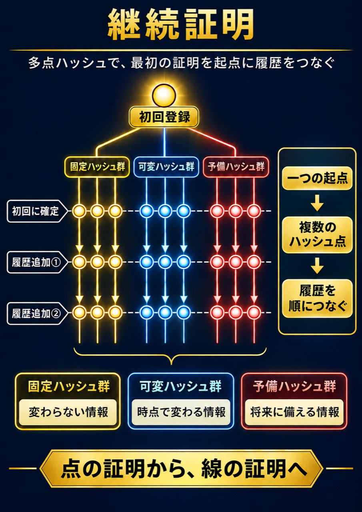

証明くんは、一度きりの存在証明にとどまらず、
最初の登録を「正本一意の起点」として確定し、そこから現在までの履歴を継続して確認・検証するための証明システムです。

たとえば車なら、黄色は車台番号などの変わらない情報、青は走行距離や点検・修理の記録、赤は将来の追加に備えた枠です。
初回登録を起点に、新しい記録が図の下へ一段ずつ加わり、その車の履歴をたどれます。
👉 Web3 Proof DAO オープンチャットに参加する
※ 今参加しているメンバーのみ、初期設計段階から関わることができます
証明くんの中核は、
一つの対象から「正本一意の起点」を確定し、その起点から履歴を継続して証明する「継続証明構造」
です。
ブロックチェーンそのものが証明くんなのではありません。
証明くんでは、継続証明構造によって生成・管理されるハッシュなどの証明情報を、
必要に応じてブロックチェーンを含む外部証跡システムへ記録します。
契約書、個人情報、企業機密などの元データそのものを、
すべてブロックチェーン上へ公開する必要はありません。
必要な証明情報をハッシュ等として外部証跡へ記録し、
内部の登録情報と照合することで、
機密性を保ちながら、履歴の整合性・連続性・検証可能性を高める
ことを目指します。
継続証明構造 × Blockchain
＝ 内部記録だけに依存しない証明へ
証明くんが目指すのは、誰もが自分の記録を管理し、最初の登録から現在までの履歴を自分で確かめ、必要なときに人に示せる社会です。これが「証明の民主化」です。
この理念を広げるため、天地愛プロジェクトはWeb3 Proof DAO（ウェブスリー・プルーフ・ダオ）を構想しています。参加者が証明くんの新しい使い方や改善案を持ち寄り、運営方針を一緒に決めていく仕組みです。
DAO憲章を読む（理念と運営方針）
「証明くん」は、写真・動画・音声・文章・PDF・業務記録などを自ら登録し、
最初の登録を「正本一意の起点」として確定し、その後の履歴を継続して確認・検証できる
証明システムとして開発を進めています。
証明の起点となる一つの対象から、
固定ハッシュ群・可変ハッシュ群・予備ハッシュ群という
三つの証明系統を発出させ、それぞれの役割を保ちながら、
追加・変更・訂正などの履歴を継続して管理します。
この構造により、一度きりの存在証明ではなく、
起点から現在、そして将来へ続く「継続証明」の実現を目指します。
さらに、必要に応じてハッシュ等の証明情報を
ブロックチェーンを含む外部証跡システムへ記録し、
内部記録との独立した照合によって、
履歴の整合性・連続性・検証可能性を高めます。
記録の公開・限定公開・非公開は本人が決定し、
個人や企業が自らの記録を管理し、必要なときに証明・検証できる
社会基盤の実現を目指しています。
現在の証明くんでは、一つの物・情報・記録から正本起点を確定し、
そこから固定ハッシュ群・可変ハッシュ群・予備ハッシュ群という
三つの証明系統を発出させ、それぞれを継続して管理する
「継続証明構造」へと発展しています。
さらに、必要に応じてハッシュ等の証明情報を
ブロックチェーンを含む外部証跡システムへ記録し、
内部記録との独立照合によって、履歴の整合性・連続性・検証可能性を高めます。
実用新案11件登録済みです。
登録11件の一覧を見る各登録からJ-PlatPat（ジェイプラットパット）の公的情報へ移動できます。
2026年8月10日、次の発明について特許出願を行いました。
本発明は、登録対象について「最初に何が登録されたか」を履歴の起点として確定し、その後に行われる更新、追加、訂正などを、起点との関係を保ったまま継続的に記録・管理・検証するための仕組みです。
初回登録時には、対象の同一性に関する固定情報から固定ハッシュ値を、当初の状態に関する情報から可変ハッシュ値を生成し、これらを一組の「起点登録情報」として確定します。
固定ハッシュ系統では登録対象の同一性に関する情報を保持し、可変ハッシュ系統では、対象の状態が追加・変更されるたびに新たなハッシュ値を生成して、その後の履歴を継続して管理します。
さらに本出願には、追加構成として、将来追加される情報や通常の状態変化とは異なる情報を管理する予備ハッシュ系統、最初の固定ハッシュ値を保持したまま訂正履歴を追加する仕組み、情報項目ごとの部分ハッシュ値と記録全体の全体ハッシュ値を組み合わせる多点・多層のハッシュ構造も含まれています。
必要に応じて、ハッシュ値などをブロックチェーンを含む外部証跡システムへ記録し、登録情報との整合性や履歴の連続性を検証できます。
また、起点登録情報、更新履歴、ハッシュ情報及び検証結果を基に証明情報を生成し、文書・画像・PDFなどの証明書として提示したり、QRコードなどの参照情報を付したりする構成も含まれています。
分かりやすく表現すれば、本発明は、一度きりの存在証明にとどまるものではありません。対象の同一性に関する情報を保持しながら、最初の登録から、その後の更新、追加、訂正までをつなぎ、履歴の連続性を確認・検証できる「継続的な履歴証明」の実現を目指す技術です。
本プロジェクトは、知的財産の確保と実際に利用できるシステムの開発を並行して進めながら、
個人が自らの記録を管理し、自ら証明できる社会基盤の実現を目指します。
Web3 Proof DAOでは、将来的なDAO運営を見据え、
貢献・参加・意思決定を支える仕組みとしてトークンの活用を検討しています。
ただし、現段階ではトークンの発行数量、配分率、付与条件、
経済的価値などを確定事項とはしていません。
トークン設計は、証明くんの実証、コミュニティ形成、
法令・規制への適合性などを確認しながら段階的に設計します。
Web3 Proof DAOでは、将来的な分散型運営を見据え、
参加者が提案・議論・意思決定に関われる仕組みを段階的に構築します。
ただし、現段階では投票方式、投票権の付与条件、議題提出条件などの
具体的なガバナンス設計は確定していません。
DAOの成長、参加人数、実証結果、法令・規制への適合性などを確認しながら、
透明性と公平性を重視して設計します。
Web3 Proof DAO は、参加者数だけを条件として機械的に正式開放するものではありません。
証明くんの実証、コミュニティの成熟度、ガバナンス設計、法令・規制への適合性などを確認しながら、段階的に正式運用へ移行します。
正式開放の時期と条件は、実証結果とコミュニティでの議論を踏まえて決定します。